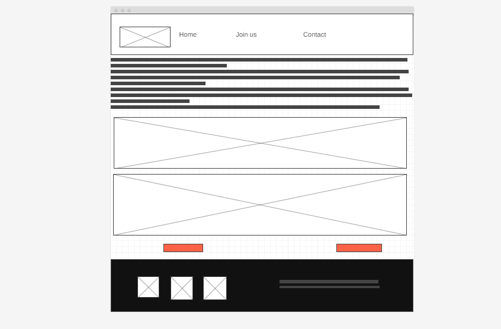
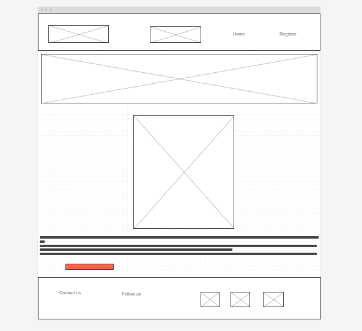
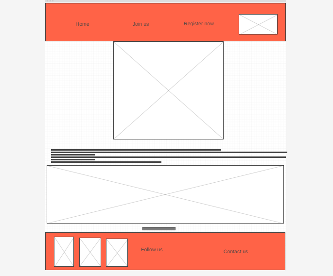

Overview
Purpose
[To help people understand the restored gospel of Jesus Christ and the importance of the Prophet to mankind. Providing trainings and matreials that will help them to follow the Prophet. ]
Audience
[families, friends, companies, churches, government, NGOs and international community. ]
Branding
Website Logo
Style Guide
Color Palette
Palette URL:
https://coolors.co/e3b505-95190c-610345-107e7d-044b7f| Primary | Secondary | Accent 1 | Accent 2 |
|---|---|---|---|
| [#e3b505] | [#95190c] | [#610345] | [#107e7d] |
Typography
Heading Font: [Roboto]
Paragraph Font: [Italic]
Normal paragraph example
So many wonderful things are ahead. In coming days, we will see the greatest manifestations of the Savior’s power that the world has ever seen. Between now and the time He returns “with power and great glory,” (Joseph Smith-Matthew 1:36), He will bestow countless privileges, blessings, and miracles upon the faithful.
Colored paragraph example
Prophet Russel M. Nelson said, For months we have been seeking a better way to minister to the spiritual and temporal needs of our people in the Savior’s way. We have made the decision to retire home teaching and visiting teaching as we have known them. them. Instead, we will implement a newer, holier approach to caring for and ministering to others. We will refer to these efforts simply as “ministering.”
Navigation
Site Map
Content
Home page
[the temple is a place where higher ordinances our performed]
Images for the Home page
[eternal marriage]
[marriage for eternity is performed in the temple]
Temple

[endowment]
[endowment is done in the temple]
Angel Moroni
Wireframes
Create three wireframes for your site. One for each page and list them here
Home
[Home has to do with the general menu of the website.]

[Page 2]
[Page 2 is being refered to join us, that has to do with the activities in the website.]

[Page 3]
[Page 3 is being refered to contact us, that has to do with the address and how to locate and communicate with the church missionaries.]
